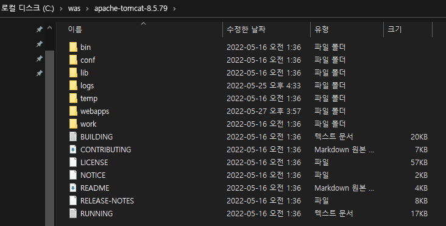
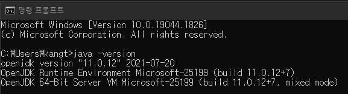
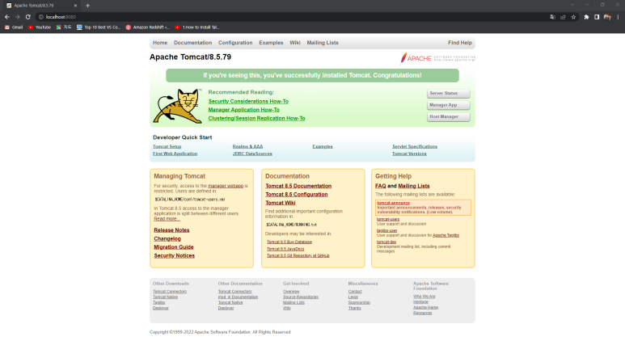

톰켓 설치
톰캣 설치는 매우 간단하다.
jdk만 설치되어 있다면 톰 펫을 압축 해제 후 바로 사용이 가능하다. 윈도의 경우 서비스를 등록할 수 있는 설치 버전 또한 있다.
설치방법
https://tomcat.apache.org/download-90.cgi
해당 사이트에서 Binary Distributions core 부분 zip 파일 다운로드
다운로드한 파일 압축 풀기

압축 푼 상태의 톰캣 모습
톰캣 실행한 jdk 확인

tomcat/bin/startup.bat 클릭하여 서버 실행
